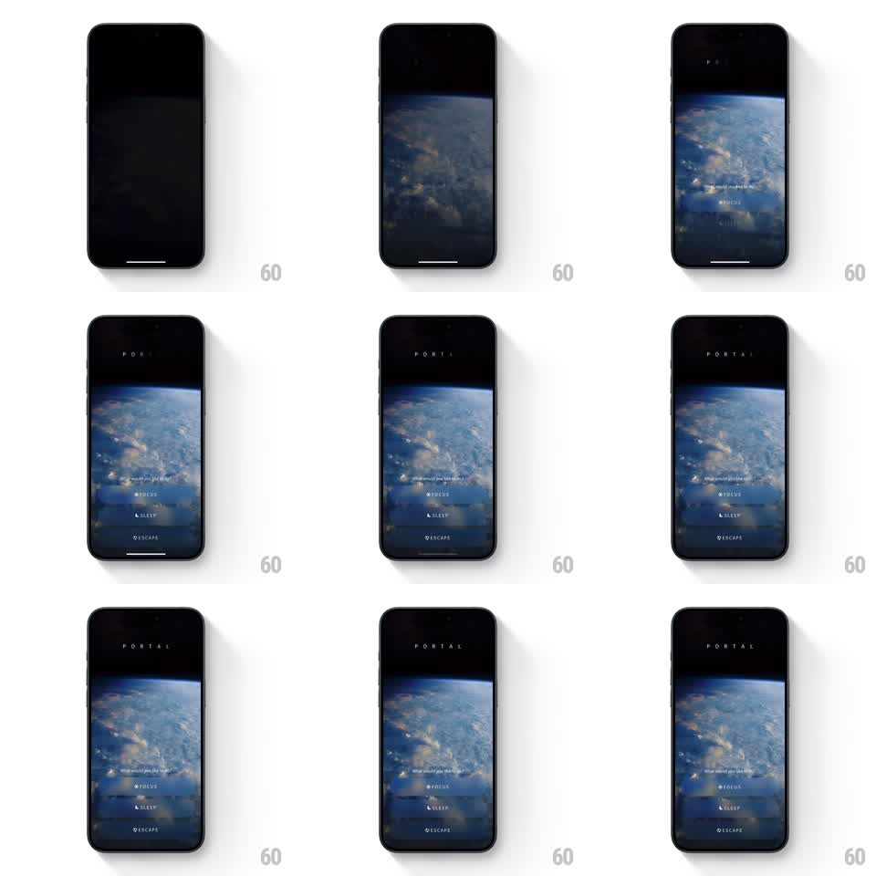

Media
Frame-by-frame

Rebuild this animation 1:1: Portal's splash - the wordmark letters materialize one by one over a cinematic earth-from-space video while the tagline and mode chips stagger in below.

Rebuild this animation 1:1: Portal's splash - the wordmark letters materialize one by one over a cinematic earth-from-space video while the tagline and mode chips stagger in below. ## Integration Integration: stack-agnostic spec - springs given as stiffness/damping, timed motions as duration + curve; map every value to your framework and animation library of choice. ## Scene Black screen that reveals a slow cinematic video of clouds and earth from space. Over it: the letter-spaced wordmark "PORTAL", the tagline "What would you like to do?", and three glass chips - FOCUS, SLEEP, ESCAPE - each with a small icon. ## Motion spec Pattern: cinematic staggered intro, ~2.5s. - The video fades up from black (800ms), already playing. - The wordmark letters appear one at a time (each fading and tightening its tracking, 80ms stagger, 300ms per letter). - The tagline fades in below (400ms). - The three chips rise and fade in sequence (translateY 16px to 0, 350ms each, 120ms stagger) with their glass blur resolving. - The video continues its slow drift throughout and after the intro. ## Calibration - Everything is slow and low-contrast - nothing pops, bounces, or springs. - The chips are translucent glass over the video; their blur must show the footage through them. ## Reduced motion Video static (poster frame); elements fade in together. ## Don't miss - The wordmark tracking is very wide - the letters breathe. - The video plays behind the UI from the first frame of the fade; there is no cut to live footage.